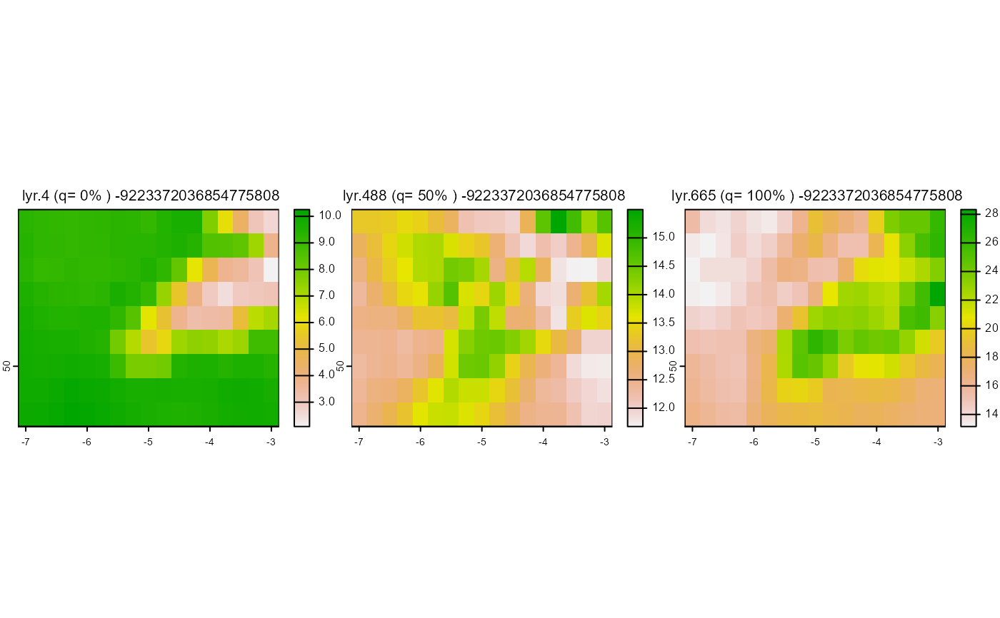

The function era5toclimarray converts data in a netCDF4 file returned
by mcera5::request_era5() to the correct formal required for subsequent modelling.
Arguments
- ncfile
character vector containing the path and filename of the nc file
- dtm
a SpatRaster object of elevations covering the extent of the study area (see details)
- dtr_cor_fac
numeric value to be used in the diurnal temperature range correction of coastal grid cells. Default = 1.285, based on calibration against UK Met Office observations. If set to zero, no correction is applied.
- toArrays
logical determining if climate data returned as list of arrays. If FALSE returns list of Spatrasters.
Value
a list of the following:
- dtm
Digital elevation of downscaled area in metres (as Spatraster)
- tme
POSIXlt object of times corresponding to climate observations
- windheight_m
Height of windspeed data in metres above ground (as numeric)
- tempheight_m
Height of temperature data in metres above ground (as numeric)
- temp
Temperature (deg C)
- relhum
Relative humidity (Percentage)
- pres
Sea-level atmospheric pressure (kPa)
- swrad
Total downward shortwave radiation (W/m^2)
- difrad
Downward diffuse radiation (W / m^2)
- lwrad
Total downward longwave radiation (W/m^2)
- windspeed
at 2m above ground (m/s)
- winddir
Wind direction (decimal degrees)
- prec
Precipitation (mm)
Details
the model requires that input climate data are projected using a coordinate reference
system in which x and y are in metres. Since values returned by mcera5::request_era5()
are in lat long, the output data are reprojected using the coordinate reference system and
extent of dtm (but retain the approximate original grid resolution of the input climate data).
Returned climate data match the resolution, coordinate reference system and extent of dtmc.
Examples
ncfile<-system.file('extdata/era5/era5_surface_ukeire_2018_05.nc',package='mesoclim')
aoi<-terra::vect(terra::ext(-7.125,-2.875,49.375,51.625),crs='EPSG:4326')
dtm<-terra::rast(system.file('extdata/dtms/era5dtm.tif',package='mesoclim'))
era5input<-era5toclimarray(ncfile, dtm=NA, aoi=aoi)
plot_q_layers(.rast(era5input$temp,era5input$dtm))

checkinputs(era5input,'hour')
#> Warning: No optional cloud cover variable found - continuing...
#> Warning: relative humidity values capped at 100
#> [1] "Weather observations = 744"
#> [1] "Timesteps= 1 hrs, max= 1 hrs, min= 1 hrs"
#> [1] "Observations over 0.08 years, or 1 months, or 30.9583333333333 days."
#> Min. Mean Max.
#> temp 1.960 13.120 30.690
#> relhum 30.130 80.027 100.000
#> pres 97.573 101.526 102.979
#> swrad 0.000 237.733 906.987
#> difrad 0.000 86.262 416.216
#> lwrad 238.508 318.355 404.901
#> windspeed 0.015 3.591 11.574
#> winddir 0.003 162.501 359.996
#> prec 0.000 0.065 5.813
#> elevation 0.000 25.294 195.494
#> [1] "Plotting spatial variation by day of year: red=max, green=mean, blue=min"
#> Error in datetime(plot_df$tstep): could not find function "datetime"